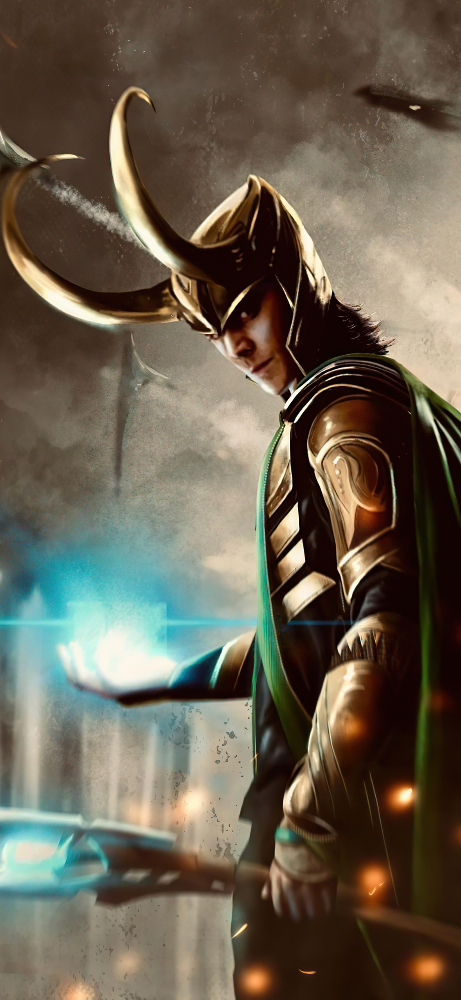
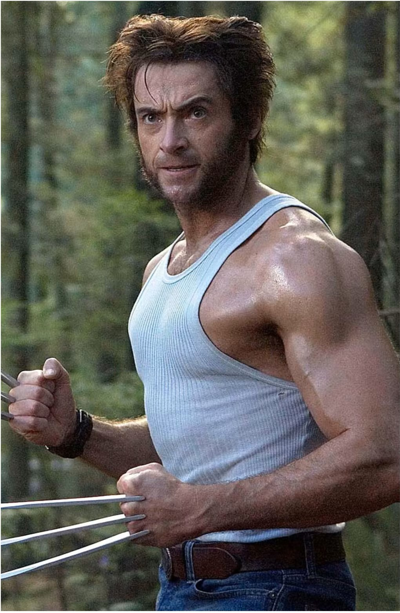

On this page I will show you why I chooce the themes I
did.
Let's start with Jurassic. The reason why I chooce this is because when I
was still a little child I always loved to watch this movies. I always thought that even
tho some of the movies are quite old they ook visualy great.
I also always
loved dinosaurs. The thought that Miljons of yeurs ago they were wandering around the
earth is amazing to me. With the sciens where we are right now I also beleef that it
actualy is possible to have dinosaurs wondering the world again.

For the second one I Explane Loki. The reason why choose this is because I
like to watch Marvel movies. Most people then stat to like the heroes in the movies. But
from my oint of view I feel more story in Loki then n most other charcters. He has a
compicated and hard to understand story line. But if you understand where he came from
it is
not to hard to understand the way he acts. I can actualy understand the way he must feel
about everything that has ever happend to him.
So I actualy like the way they
give
Loki a story line that not all characters in the movies alreay have. He has a story whee
he
can progress in to the version of himself that he wants to be.

For the thirth one I like to explane Logan. The reason why I chooce this is
because X-Men was the first line I realy watched. I didn't just look at the movies if
hey were on tv but i actualy could watch them mulptipol times a day. Logan was the first
character I realy liked the story of. I always followed the new movies that would come
out and I alwas was analizing hat happend and with characters made a step forward in
there stoy line. I notices very soon that Logan has a very complicated story and that
you realy need to watch the movies more times to fully understand it. But even tho it is
hard to understand the true story I always like to try and understand it. I also feel a
conecton to this character. No mather what would come in to his way he always faced it
and got better from it. I could also realy understand his story very well. His character
realy grows true the moves and it is good to see that there is so much thought layed in
to the way the roll is played.
I realy like the way Hugh Jackman build up
Wolverine to be the character he is on this moment. And even tho the story is not
finished yet, you always hope for the next movie to lounge as soon as possible.